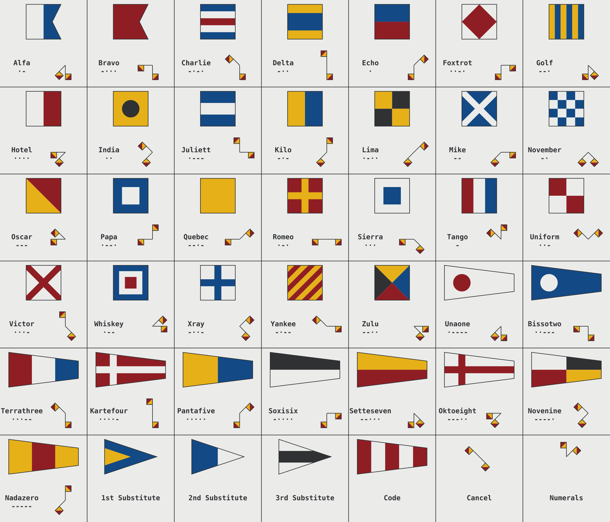
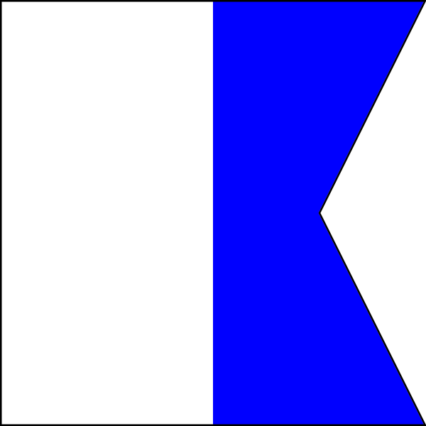

VHF Marine — MAYDAY, PAN PAN et Canal 16
Mardi matin, 8h45. À bord, avant l'appareillage pour Fethiye.
William décroche le combiné VHF. Canal 16. Il hésite.
"Je veux appeler la capitainerie de Fethiye pour confirmer notre poste à quai. Quel canal ?"
Emmanuel, depuis la descente : "Canal 16, c'est le canal de veille et d'appel. Tu les appelles sur le 16, ils te disent de passer sur un canal de travail — souvent le 9, 11, ou 12 ici en Turquie."
William appuie sur le micro. Sa main tremble légèrement. Derrière lui, Emmanuel observe — silencieux, pour une fois. Rebeca est dans la descente, à portée d'oreille. Premier appel radio officiel.
"Fethiye Liman, Fethiye Liman, ici voilier Deniz Rüzgarı, à l'écoute sur le seize, terminé."
Grésillements. Puis une voix turque accueillante : "Deniz Rüzgarı, passez sur le canal onze." William pousse un long soupir. Emmanuel lui tape sur l'épaule.
Le VHF maritime — fonctionnement
Le VHF maritime (Very High Frequency, 156–174 MHz) est le moyen de communication principal en navigation côtière. Sa portée est de l'ordre de 20–40 milles entre deux bateaux, et plus grande vers les stations côtières en hauteur.
Principe de propagation : Le VHF se propage en ligne droite (ligne de visée). La portée dépend de la hauteur des antennes — une antenne montée en tête de mât à 15 m offre une portée de 20–25 milles vers une station côtière en hauteur, et 10–15 milles vers un autre bateau à flottaison. Les obstacles (collines, falaises) coupent la propagation.

Un VHF portatif maritime (5–6 W) : compact, étanche, autonome sur batterie. C'est l'équipement à emporter dans le gilet de sauvetage en cas d'abandon du navire. Sa portée réduite (5–10 NM) en fait un complément du VHF fixe, pas un remplacement — mais en radeau de survie, c'est votre seul lien radio avec les secours.
Puissance :
- VHF fixe (25W) : portée maximale, antenne déportée en hauteur, DSC intégré. L'équipement de référence pour la navigation en mer.
- VHF portatif (5–6W) : portée 5–10 milles. Portable sur soi, résistant à l'eau, indispensable comme backup ou pour communiquer depuis l'annexe. En cas d'abandon du navire, emportez le portatif dans le gilet.
Pourquoi 25W vs 5W compte en détresse : Si votre bateau est en train de couler et que vous utilisez le VHF fixe, vous portez à 30 milles. Avec le portatif seul dans l'eau, vous portez à 5 milles. Toujours utiliser le fixe pour le MAYDAY initial.
Le DSC (Digital Selective Calling / ASN) : Fonctionnalité de votre VHF fixe qui envoie automatiquement un message numérique structuré sur la voie 70 : votre MMSI, votre position GPS (si le VHF est couplé au GPS), et la nature de la détresse. Ce message est reçu simultanément par toutes les stations VHF DSC à portée. Les secours savent qui vous êtes et où vous êtes en quelques secondes, sans que vous ayez à parler.
Le MMSI (Maritime Mobile Service Identity) : numéro à 9 chiffres qui identifie votre bateau de façon unique dans le monde. Il est enregistré auprès de l'ANFR (France) et lié aux données de votre bateau (nom, port d'attache, coordonnées du propriétaire). Sans MMSI enregistré, une alerte DSC génère une fausse alarme sans information utile.
Voir concepts/canaux-vhf, concepts/mmsi.
Équipements :
- VHF fixe : plus puissant (25W), antenne haute, DSC intégré
- VHF portatif : 5–6W, autonome, à avoir en cas d'urgence
Les canaux principaux
Le canal 16 est le canal universel de détresse et d'appel. Toute radio maritime doit y maintenir une veille permanente. On appelle sur le 16 pour initier tout contact, puis on bascule immédiatement sur un canal de travail pour la conversation. Le canal 16 doit rester libre pour les appels de détresse.
Le canal 70 est UNIQUEMENT pour les données DSC — les signaux numériques automatiques. Ne jamais émettre vocalement dessus. C'est une infraction et cela brouille les alertes de détresse automatiques.
| Canal | Usage |
|---|---|
| 16 | Veille obligatoire, appels d'urgence, appels initiaux |
| 9 | Canal de travail plaisance (France) |
| 67 | Canal SAR (France) |
| 70 | DSC (Appel Sélectif Numérique — données uniquement, ne pas vocaliser) |
| 12, 14 | Ports (VTS) |
| 68–72, 77 | Canaux de travail plaisance |
En Turquie, les canaux de travail des ports varient : Fethiye utilise le canal 12 pour le VTS. En France, après l'appel sur le 16, le canal 9 est le plus courant pour la plaisance.
Procédures radio — le bon langage
La discipline radio évite les confusions dans des situations où la clarté peut sauver des vies.
Voir concepts/alphabet-oaci.
Alphabet phonétique OACI : Alpha, Bravo, Charlie, Delta, Echo, Foxtrot, Golf, Hotel, India, Juliet, Kilo, Lima, Mike, November, Oscar, Papa, Quebec, Romeo, Sierra, Tango, Uniform, Victor, Whiskey, X-ray, Yankee, Zulu.
Le Code International de Signaux — les pavillons
Bien avant la radio, les navires communiquaient par pavillons. Le Code International de Signaux (CIS) attribue à chacune des 26 lettres de l'alphabet un pavillon de forme et de couleur distinctes, chacun portant une signification propre lorsqu'il est hissé seul. Plusieurs de ces pavillons sont des questions récurrentes à l'examen du permis côtier :

Les 26 pavillons du Code International de Signaux. Chaque pavillon, hissé seul, transmet un message standardisé compris par tous les navigateurs du monde, quelle que soit leur langue.
Les pavillons essentiels pour l'examen :

Le pavillon Alpha (blanc et bleu, à deux pointes) signifie : "J'ai un plongeur en immersion — tenez-vous à distance et passez à vitesse réduite." Vous le verrez hissé sur les bateaux de plongée et les clubs de plongée côtiers. Obligation de passer à distance et à vitesse réduite (moins de 3 nœuds dans un rayon de 100 mètres).

Le pavillon Oscar (jaune et rouge, divisé en diagonale) signifie : "Homme à la mer." Hissé pour alerter visuellement les navires environnants qu'une personne est tombée à l'eau et qu'une opération de récupération est en cours. Il complète l'alerte radio.
Autres pavillons fréquents à l'examen :
- Bravo (rouge) : "Je charge ou décharge des matières dangereuses" — restez à distance.
- November-Charlie (N+C hissés ensemble) : signal de détresse visuel — "Je suis en détresse et j'ai besoin d'assistance immédiate." C'est l'un des signaux de détresse reconnus par le RIPAM.
- Quebec (jaune) : "Mon navire est indemne et je demande la libre pratique" — utilisé à l'entrée d'un port étranger pour les formalités sanitaires.
- Hotel (blanc et rouge, divisé verticalement) : "J'ai un pilote à bord."
Quand épeler : Toujours pour les noms propres, immatriculations, MMSI. Utiles pour les lettres ambiguës en radio : B (Bravo, pas Sierra), D (Delta, pas Tango), M (Mike, pas November), P (Papa, pas Bravo).
Lettres les plus confondues en radio — aide-mémoire :
| Lettre | Code phonétique | Confusion fréquente | Astuce |
|---|---|---|---|
| B | Bravo | vs D (Delta), P (Papa) | « Bravo ! » → applaudissement |
| D | Delta | vs B (Bravo), T (Tango) | Triangle du Nil |
| M | Mike | vs N (November) | Prénom court |
| N | November | vs M (Mike) | Mois long |
| P | Papa | vs B (Bravo) | Famille |
| S | Sierra | vs F (Foxtrot) | Montagne |
L'alphabet phonétique OACI/NATO a été conçu en 1957 pour maximiser la distinction acoustique entre lettres — chaque mot a été testé dans des dizaines d'accents. En mer, avec du bruit moteur et des grésillements radio, ces mots sont votre seule garantie d'être compris.
Terminologie standard :
- "Ici" / "De" = identification de l'émetteur
- "À" = identification du destinataire
- "Terminé" / "À vous" = fin de transmission, réponse attendue
- "Reçu" = message bien reçu, pas de réponse nécessaire
- "Bien reçu cinq sur cinq" = réception excellente
- "Silence" = mot d'ordre du CROSS pour dégager le canal 16 pendant les opérations SAR — toutes les stations cessent immédiatement d'émettre
- "Silence Fini" = le CROSS annonce la fin de l'opération, le trafic normal peut reprendre
Format d'un appel standard :
[Destinataire], [Destinataire]
Ici [Votre nom], [Votre nom]
Terminé
Réponse attendue :
[Votre nom]
Ici [Destinataire]
Canal [X]
MAYDAY — détresse grave
MAYDAY s'utilise en cas de danger grave et imminent pour le navire ou les personnes : naufrage en cours, incendie incontrôlable, blessé grave qui engage le pronostic vital, homme à la mer non récupéré.
Le mot "MAYDAY" vient du français "m'aidez" — il est reconnu dans toutes les langues maritimes.

Procedure DSC d'abord (si disponible) :
- Ouvrir le capot rouge, appuyer ≥ 5 secondes → l'alerte numérique part automatiquement sur le canal 70 avec MMSI + position GPS.
- La VHF passe automatiquement sur le canal 16 pour le message vocal.
Structure du message vocal MAYDAY :
MAYDAY MAYDAY MAYDAY
Ici [nom du bateau] [MMSI]
MAYDAY [nom du bateau]
Position : [lat/lon ou relèvement depuis un amer connu]
Nature du problème : [incendie/voie d'eau/etc.]
Type d'assistance requise : [remorquage/évacuation médicale/etc.]
Nombre de personnes à bord : [N]
Informations utiles : [couleur de la coque, type de bateau]
Terminé
Exemple complet :
MAYDAY MAYDAY MAYDAY
Ici voilier Deniz Rüzgarı, MMSI 271XXXXXX
MAYDAY Deniz Rüzgarı
Position : 36°43'N 29°02'E, 4 milles à l'ouest de Göcek
Incendie dans la salle des machines incontrôlable
Demandons assistance immédiate
4 personnes à bord
Voilier bois, coque blanche, 13 mètres
Terminé
Relay MAYDAY : Si vous captez un MAYDAY sans réponse : retransmettez en préfixant par "MAYDAY RELAY, MAYDAY RELAY, MAYDAY RELAY, à tous, ici [votre nom]..." suivi du message original.
Voir concepts/procedure-mayday.
PAN PAN — urgence non-mortelle
PAN PAN s'utilise pour une urgence sérieuse qui n'est pas encore une menace vitale immédiate : blessé qui nécessite des soins médicaux, homme à la mer récupéré mais inconscient, panne moteur avec dérive vers un danger dans les prochaines heures, avarie sérieuse sans naufrage imminent.
PAN PAN s'utilise pour une urgence moins grave mais nécessitant une assistance : blessé non vital, panne moteur en dérive vers un danger, bateau en difficulté sans risque immédiat.
Format similaire au MAYDAY : PAN PAN × 3, puis les mêmes éléments (identification, position, nature, assistance requise). L'appel se fait sur le canal 16.
Annulation : Quand l'assistance arrive ou que la situation se résout, annoncez sur le canal 16 : "À tous, ici [nom], annulation de mon PAN PAN de [heure UTC], tout est en ordre."
Voir concepts/procedure-pan-pan.
SÉCURITÉ — avis de navigation
SÉCURITÉ est le préfixe pour les informations urgentes concernant la navigation ou la météo. Ce n'est pas un appel de détresse — c'est une information importante pour tous les navires dans le secteur.
Utilisé par :
- Le CROSS pour diffuser les bulletins météo spéciaux (BMS)
- Les navires qui signalent un danger flottant, une épave, une zone à éviter
- Les capitaineries pour les avis aux navigateurs urgents
Format : "Sécurité, Sécurité, Sécurité, à tous..." puis l'information.
Voir concepts/procedure-securite.
DSC — Appel Sélectif Numérique
Le DSC transforme votre VHF en système de détresse automatique. En cas d'urgence, vous n'avez pas à trouver les mots — un seul geste suffit.
Comment fonctionne une alerte de détresse DSC :
- Appuyer ≥ 5 secondes sur le bouton rouge sous le capot protecteur
- Votre VHF transmet automatiquement 5 fois sur le canal 70 : MMSI + position GPS (si couplée) + nature de la détresse
- L'alerte se renouvelle toutes les 4 minutes jusqu'à accusé de réception
- La VHF passe automatiquement sur le canal 16 pour le message vocal
- Les stations côtières et navires DSC dans un rayon de 20–40 milles reçoivent l'alerte avec votre position
Ce que les secours voient : Votre MMSI → leur permet d'accéder immédiatement à la fiche de votre navire (nom, port, description, contacts d'urgence). Votre position GPS → ils savent où envoyer les secours avant même de vous avoir parlé.
Programmation préalable obligatoire : Le MMSI doit être programmé à l'avance dans la VHF par un professionnel. Une VHF DSC sans MMSI programmé ne peut pas envoyer d'alerte de détresse correcte. Priorité à faire avant de prendre la mer.
Fausse alerte : Annulez immédiatement sur le canal 70 (ASN) si votre VHF le permet, puis sur le canal 16 verbalement.
Voir concepts/asn-dsc, concepts/mmsi.
Premier appel DSC du Deniz Rüzgarı :
William ouvre le capot rouge sur la VHF fixe et programme le MMSI du bateau dans les paramètres. Emmanuel observe, les bras croisés. "Ce truc-là, je n'ai jamais su le programmer." William en a pour trois minutes. "C'est fait. Maintenant le GPS est couplé — si tu appuies cinq secondes sur ce bouton rouge, les secours ont ta position instantanément." Emmanuel regarde l'écran. Long silence. "Bon — au moins toi tu sais. Moi j'ai appris à la voix. Canal 16, 'tous navires, tous navires'… ça marchait aussi." Il sourit malgré lui. "Mais je reconnais que c'est mieux comme ça."
Contact avec les Gardes-Côtes turcs (Sahil Güvenlik) :
En Turquie, la veille du canal 16 est assurée par la Sahil Güvenlik (Garde Côtière turque). La procédure est identique aux COLREGs/SOLAS — même langage international.
En entrant dans les ports turcs, certains requièrent un appel VHF préalable (Port Fethiye : canal 12 pour le VTS).
Si vous avez un MMSI turc (ou français avec inscription ANFR), le DSC fonctionne également en eaux turques.
Question 1 : William doit émettre un MAYDAY depuis le Deniz Rüzgarı. Dans quel ordre dit-il les éléments ?
- A) Position, puis "MAYDAY", puis le nom du bateau
- B) "MAYDAY MAYDAY MAYDAY", puis nom du bateau, puis position et nature du problème
- C) Nom du bateau, puis "MAYDAY", puis le canal de contact
Voir la réponse
Réponse : B — Procédure MAYDAY réglementaire : (1) "MAYDAY MAYDAY MAYDAY" — 3 fois, (2) "Ici le Deniz Rüzgarı, Deniz Rüzgarı, Deniz Rüzgarı" — 3 fois, (3) "MAYDAY Deniz Rüzgarı" — 1 fois, (4) Position, (5) Nature du problème, (6) Nombre de personnes à bord, (7) Toute autre information utile. La triple répétition de MAYDAY alerte immédiatement tous les auditeurs.Question 2 : Le Deniz Rüzgarı est en panne moteur à 3 milles des rochers de Kızılada, sans vent, dérivant à 1 nœud vers les rochers (ETA impact 40 minutes). Quel appel radio est approprié ?
- A) MAYDAY — naufrage imminent dans 40 minutes
- B) PAN PAN — urgence sérieuse mais le danger n'est pas encore certain
- C) Appel de routine sur canal 67 au port de Göcek
Voir la réponse
Réponse : A — Avec un impact dans 40 minutes sans possibilité de manœuvre, le danger est grave et imminent — c'est un MAYDAY. Si la dérive était vers la plage ouverte et que le danger était incertain (B), PAN PAN serait adapté. Un appel ordinaire (C) est inapproprié pour toute situation d'urgence.Question 3 : Après un appel MAYDAY, le CROSS (Centre Régional Opérationnel de Surveillance et de Sauvetage) accuse réception. Que répondez-vous ?
- A) Remerciez et raccrochez — le CROSS prend en charge
- B) Confirmez que le MAYDAY est bien reçu, répétez votre position et l'état de votre équipage
- C) Passez sur le canal 67 pour libérer le canal 16 pour d'autres urgences
Voir la réponse
Réponse : B — Après l'accusé de réception du CROSS, vous confirmez la réception, répétez votre position si elle a changé, et donnez l'état de l'équipage (blessés, personnes à l'eau…). Restez sur le canal 16 sauf instruction contraire du CROSS. Ne raccrochez jamais sans instruction — le CROSS peut vous guider jusqu'aux secours.Question 4 : Emmanuel entend un MAYDAY sur canal 16 mais le CROSS ne répond pas. Quelle est la procédure à suivre pour les navires qui reçoivent ce MAYDAY ?
- A) Rester en écoute passive — le CROSS répondra dès qu'il sera disponible
- B) Tenter de répondre au MAYDAY et relayer l'alerte vers le CROSS si nécessaire
- C) Changer de canal pour ne pas saturer le 16 avec des réponses multiples
Voir la réponse
Réponse : B — Si le CROSS ne répond pas dans un délai raisonnable, tout navire entendant un MAYDAY a l'obligation de répondre et d'alerter les secours. La procédure "MAYDAY RELAY" permet de retransmettre un MAYDAY reçu d'un navire en détresse vers le CROSS. La solidarité en mer est une obligation légale et éthique.À Fethiye, ils amarrent au quai de la douane. L'officier monte à bord pour vérifier les papiers. Il y a le "Carnet de Navigation" (le Transit Log en Turquie), le livre de bord, les licences radio. Tout est en ordre. Il signe, tamponne, sourit. Rebeca, qui a passé un quart d'heure à pratiquer son turc avec lui (« teşekkür ederim » — merci), revient avec un grand sourire : "Il dit qu'il a un fils qui peint aussi. Je lui ai montré mon carnet." Quand l'officier repart, Emmanuel rit : "Donc même la douane se transforme en vernissage avec toi." Puis, plus sérieux : "Et pour naviguer en France ? Quels papiers faut-il ?"
Session 6.2 — Documents, Licence et Réglementation.